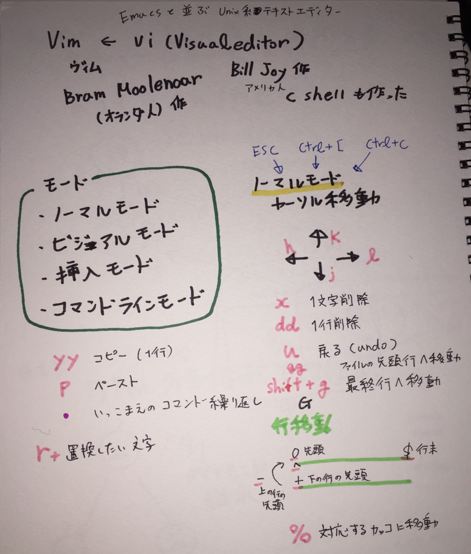

鉄は熱いうちに打て
=============================
Vimに詳しくなりたい2017¶
2017-12-20
この記事は Geek Women Japan Advent Calendar 2017 20日目です。
もう20年位使っているvimについて真面目に調べてみました。 これまではサーバーのファイルを書き換えるのに主に使っていました。 カーソル移動と挿入モードくらいしか使っていませんでした。 カーソルの移動も挿入モードの場合は十字キーで移動していました。 しかし、一行が長いと行の最後に移動するのが面倒だったり、プログラムを書くときに覚えている機能が少なすぎて辛いです。 そこで、もう少し学ぶことにしました。
Viを作ったのはBill Joyなんですね。
会社にVimが好きな人も多いので、困ったらslackのVim部屋で聞けるのもありがたいです。
. を打つと一つ前の命令を繰り返せるのが地味に便利ですね。
ctl+[ でノーマルモードに戻れると教えてもらって、積極的に使っていこう！と思ったんですが、 esc キー移動に control キーを打つ習慣がなかったので、やっぱり esc キー押してます。てへっ。
.vimrc¶
vimの初期設定をしておくファイル。macの場合は ` ~/.vimrc` に設置するようです。 なかったので作りました。適当に検索して書いてみました。他に設定したほうがいいやつあるかな？
$ vim ~/.vimrc
コマンドモードで設定できるコマンドは書けるようです。
" コメントはダブルクォート
" ファイルの文字コードをutf-8にする
set fenc=utf-8
" バックアップを作成しない
set nobackup
" スワップファイルを作成しない
set noswapfile
" 編集中のファイルを切り替えるときに保存していなくても切り替えられる
set hidden
" 入力中のコマンドをステータスに表示
set showcmd
" 行番号を表示
set number
" カーソルラインを表示
set cursorline
" 列を強調表示
" set cursorcolumn
" カーソルを行末の一行先まで移動可能
set virtualedit=onemore
" 括弧入力時に体操する括弧を表示
set showmatch
" エディタウィンドウの末尾から2行目にステータスラインを常に表示する
set laststatus=2
" タブ補完をマッチするものをリスト表示、共通する最長部分まで補完する
set wildmode=list:longest
" タブの空白の数
set tabstop=4
" オートインデント有効（次の行も同じインデント維持）
set autoindent
" インデントの
set shiftwidth=4
" タブキーを使ったら、空白を入力
set expandtab
cursorcolumn は鬱陶しかったのでコメントアウト
来年はスパービマーになったぜ！という記事を投稿できるように精進します。
明日は、 @se_lina さんです。